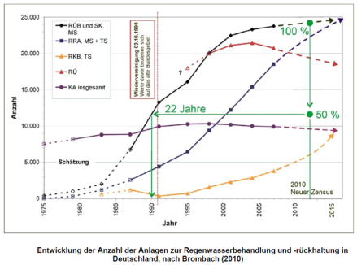

VDMA 24657 (2012): Technische Ausrüstung für Anlagen der zentralen
Regenwasserbehandlung und -rückhaltung - Hinweise für Betrieb,
Instandhaltung und Erneuerung, VDMA-Verlag basierend auf Brombach, H.
(2010): Im Spiegel der Statistik: Abwasserkanalisation und Regenbecken
in Deutschland, Korrespondenz Abwasser, Heft 1, S. 28 - 36